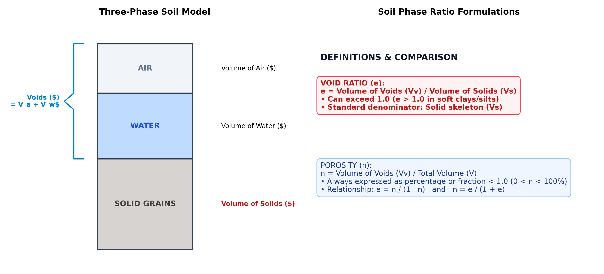

The correct option is (b) Volume of voids / Volume of solids.
In engineering geology, soil mechanics, and geotechnical engineering (codified by Karl Terzaghi):
Option (a) describes porosity ($n$), whereas option (b) provides the exact definition of void ratio ($e$).

A natural particulate soil or porous rock mass consists of three distinct phases:
The total void volume ($V_v$) is the sum of water and air volumes:
To derive porosity in terms of void ratio:
Dividing numerator and denominator by $V_s$:
Conversely, to express void ratio in terms of porosity:
In consolidation, settlement, and compaction analysis:
| Property | Symbol | Mathematical Formula | Typical Range | Physical Meaning |
|---|---|---|---|---|
| Void Ratio | $e$ | $V_v / V_s$ | 0.3 – 1.5 (can exceed 2.0+ in clays/peat) | Volume of voids per unit volume of solids (Option b) |
| Porosity | $n$ | $V_v / V$ | 20% – 60% (always $0 < n < 1.0$) | Volume of voids per unit total volume (Option a) |
| Degree of Saturation | $S_r$ | $V_w / V_v$ | 0% (dry) to 100% (fully saturated) | Fraction of void space occupied by water |
| Air Content | $a_c$ | $V_a / V_v$ | 0% to 100% | Fraction of void space occupied by air ($a_c = 1 - S_r$) |
Karl Terzaghi & Ralph B. Peck, Soil Mechanics in Engineering Practice:
"The void ratio e is defined as the ratio of the volume of the voids to the volume of the solid substance. The porosity n is the ratio of the volume of the voids to the total volume."
K. M. Bangar, Principles of Engineering Geology:
"Void ratio (e) = Volume of voids / Volume of solids = Vv / Vs. Porosity (n) = Volume of voids / Total volume = Vv / V."